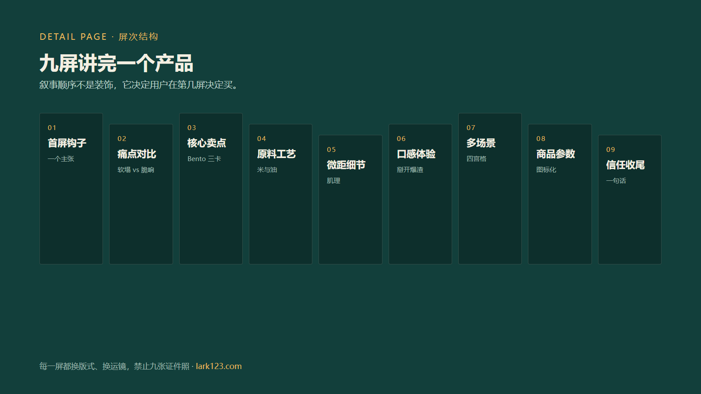
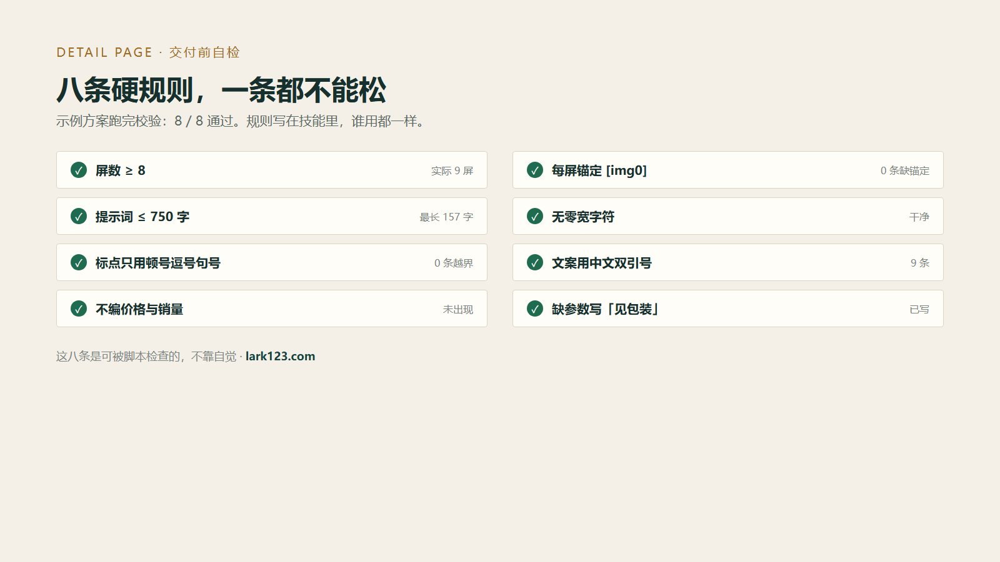

DETAIL DESIGNER / LARK EDITION
让详情页
自己会说话
给一张产品图，产出九屏叙事：每屏一句文案、一段可出图的提示词、一套不重样的版式。不编价格，不编销量，参数缺了就写「见包装」。
01产品分析
02屏次规划
03逐屏文案
04出图与迭代
给一张产品图，产出九屏叙事：每屏一句文案、一段可出图的提示词、一套不重样的版式。不编价格，不编销量，参数缺了就写「见包装」。
详情页不是把卖点堆上去，而是决定用户看到第几屏时愿意相信你。这个技能把这个决定固化成九屏流程。
9 屏方案（Markdown）+ 每屏提示词
宿主有图像工具时可直接出图；没有就交付方案。
| 它的底线 | 怎么执行 |
|---|---|
| 不编造价格、销量、认证 | 用户没给就不写 |
| 参数缺了就写「见包装」 | 参数屏不用假数字填 |
| 产品外观不能变样 | 每屏提示词都以 [img0] 锚定 |
它不会给你九张同款图。每屏换版式、换运镜：居中英雄、左右分栏、Bento 网格、微距破框、四宫格，交替出现。

纯提示词技能，没有任何代码依赖。把整个文件夹放进技能目录就行。
豆包是 .user_skills，其它智能体换成各自的 skills 目录。
要真正出图，宿主需要有图像编辑工具（豆包是 image_edit）。没有的话，技能只交付 Markdown 方案。
怎么触发
以示例方案的第 1 屏为例，每次交付都包含这四块：
版式
文案（画面上的字）
画面提示词
风格

随包提供 tools/validate-sample.mjs（需 Node 18+），可以对任何一份产出的方案跑一遍：
小卖家没有设计团队，详情页要么套模板、要么求人做。这个技能把「讲哪几屏、每屏说什么」变成可复用流程，并且卡住编造数据这条线。
| 目标 | 要改什么 | 难度 |
|---|---|---|
| Claude Code / Codex / Cursor | 放进对应 skills 目录即可 | 低 |
| 自研 Agent | 把 SKILL.md 作为系统提示词载入 | 低 |
| Dify / Coze | 作为提示词模板导入，换成平台图像能力 | 中 |
宿主没有图像工具，或你没说「直接出图」。方案本身就是默认交付物。
出图阶段必须把你的产品图作为 [img0]，换图后所有屏重出。
让它每屏只留 1 主标 + 1 副标，删掉支撑小字。